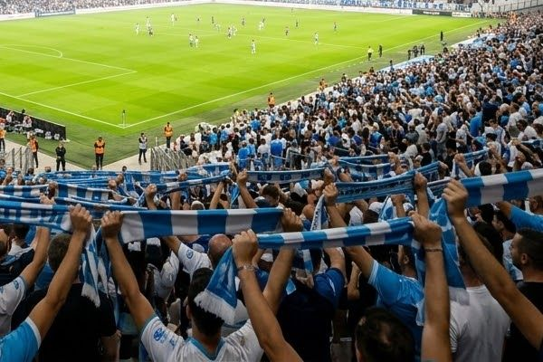
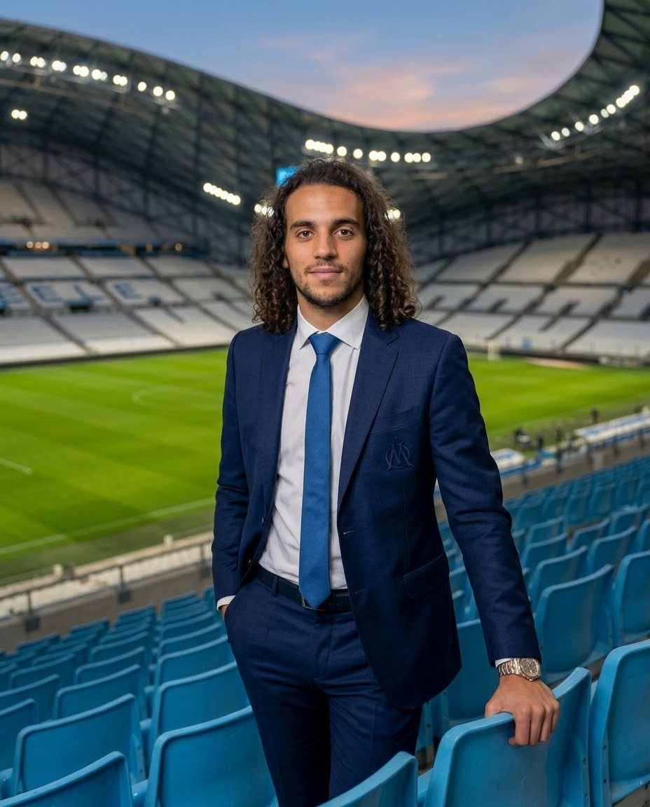
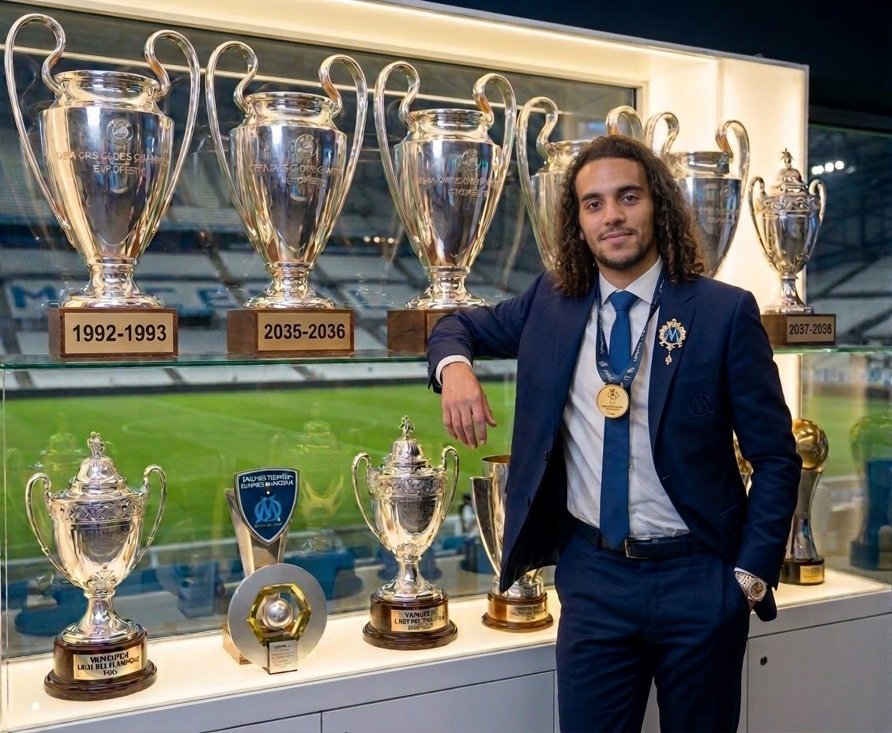
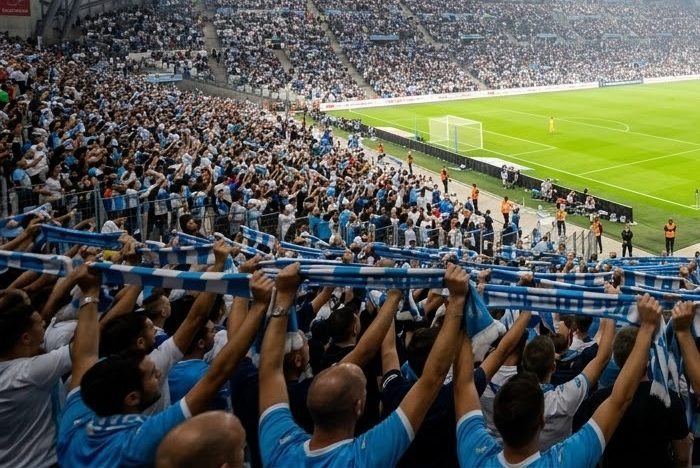
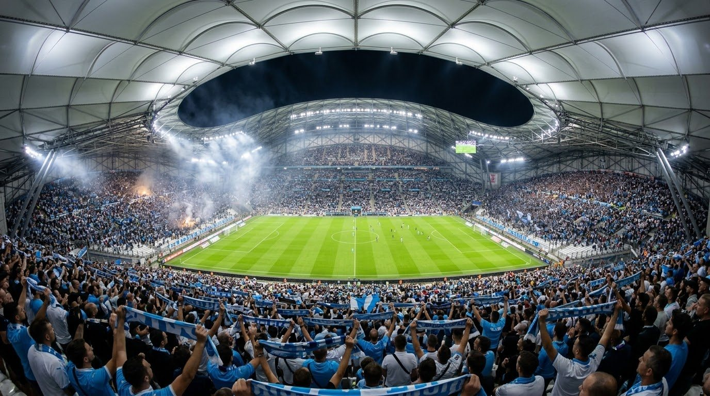
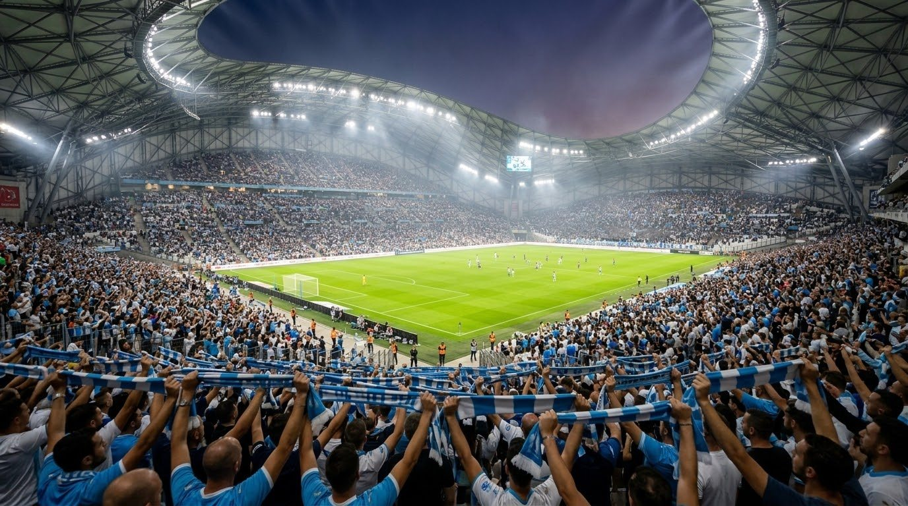
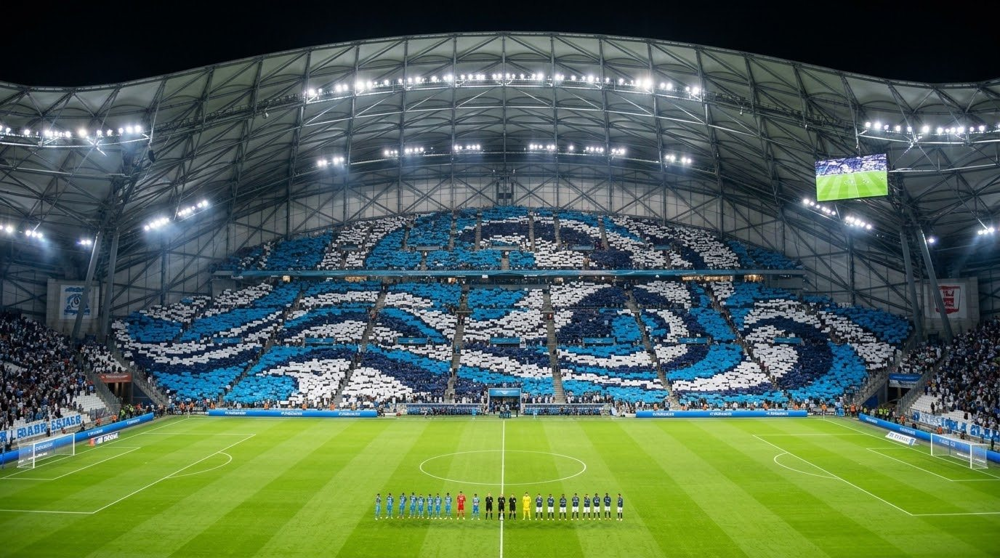
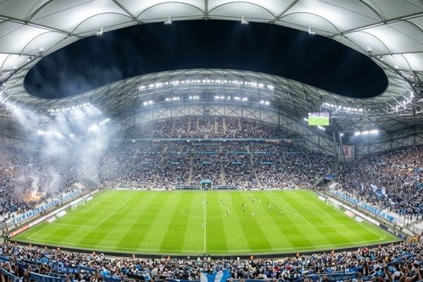
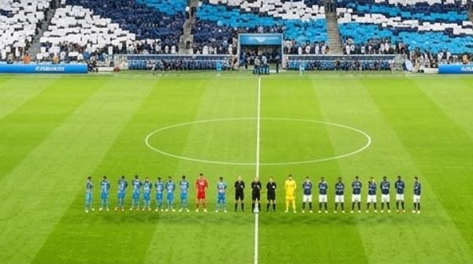
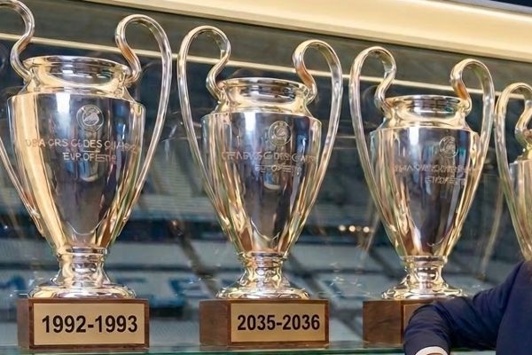

Connaître chaque supporter
La donnée sert la tribune : moins d'attente aux portes, des transports adaptés, des offres utiles. Aucune donnée n'est revendue.
Président de l'Olympique de Marseille
J'ai commencé par raccorder des maisons à la fibre en Bourgogne. Aujourd'hui, je dirige un club dont chaque décision se mesure en tribune.


Président de l'OM depuis janvier 2036
Mon parcours n'est pas celui d'un dirigeant de football classique. J'ai appris le terrain dans les réseaux télécoms, la vente en prospectant au téléphone, puis la donnée en mesurant les flux de population pour Orange Business.
C'est là que j'ai compris qu'un stade est avant tout une question de flux et de gens. Nommé président à 30 ans, je dirige le club avec la même règle : relier les supporters à ce qui compte pour eux.
Fin de la saison 2037–2038
Des résultats sportifs et économiques qui avancent ensemble, sans sacrifier l'un pour l'autre.
J'ai commencé en tirant de la fibre jusqu'aux maisons. Mon métier n'a pas changé : relier les gens à ce qui compte pour eux.


Le stade et ses supporters sont la raison d'être du club. Chaque décision prise à la présidence commence par une question : qu'est-ce que ça change pour la tribune ?
Quelques soirées au Vélodrome
Les images qui résument ce que le club veut offrir à chaque match.


Quatre engagements pris le jour de ma nomination

La donnée sert la tribune : moins d'attente aux portes, des transports adaptés, des offres utiles. Aucune donnée n'est revendue.

Séminaires, concerts, e-sport et visites : chaque jour sans match crée des revenus et du lien avec la ville.

Le centre de formation d'abord, et une Académie de l'alternance ouverte aux jeunes de la ville.

Masse salariale plafonnée et objectifs publiés chaque saison. L'ambition se construit sur la durée.
Des réseaux à la présidence
2023 – 2026
Orange, Dijon
74 pré-études de raccordement traitées en autonomie en Côte-d'Or, dans l'Yonne et les Vosges, pendant un BUT Réseaux et Télécommunications.
2026 – 2028
Orange Business, Nanterre
Analyse anonyme des flux de population par le réseau mobile, en parallèle du Mastère Ingénieur d'affaires d'Euridis.
2026
Agence de prospection
Campagnes Meta Ads pour audioprothésistes indépendants, 1 249 cabinets qualifiés à la main.
2028 – 2030
Orange Business
Offre dédiée aux stades et aux fan zones, premiers contrats avec des clubs de Ligue 1.
2030 – 2033
Plateforme de pilotage des stades
Billetterie, flux et restauration sur un seul écran. Quatorze clubs européens équipés, puis une cession.
2033 – 2035
Olympique de Marseille
Revenus commerciaux, billetterie, partenariats et stratégie data du club.
Depuis 2036
Olympique de Marseille
Nommé à 30 ans. Deux coupes d'Europe et un championnat de France depuis la nomination.
Sous ma présidence
Des titres qui récompensent un projet construit sur la durée, avec un effectif stable et un budget tenu.
Le problème de départ, et ce qui a changé
Mesure des flux en temps réel autour du stade, portes ouvertes selon l'affluence et horaires coordonnés avec les transports de la métropole.
Une équipe commerciale dédiée aux PME et ETI locales, avec des offres accessibles, pour ne plus dépendre de quelques grands sponsors.
Billetterie, data, sécurité, événementiel : des alternants de la ville recrutés chaque année, dont plus d'un tiers embauchés ensuite.
Un profil technico-commercial
Mener un chantier du diagnostic à la livraison.
Ouvrir un marché et conclure des ventes complexes.
Transformer des flux bruts en décisions claires.
Comprendre ce qui fait tourner un stade connecté.
Entreprises, collectivités, écoles : le club cherche des partenaires qui partagent son ambition pour Marseille.
Presse, partenariats ou demandes d'intervention : le secrétariat de la présidence transmet chaque message et répond sous une semaine.